A MultiPolygon whose parts are genuinely separated had to form one connected tile block, so the solver spent repair effort on a constraint it could not satisfy. Each geometry is now split into sub-regions, one per part of at least half a tile area, with its tile count apportioned by original-geometry area; the relocation reach moves 8 to 16 hops in the same PR. Census configurations are unchanged or better; on the world dataset the predicted reduction in neighbour damage does NOT appear, which is reported rather than tuned away.
Two changes, deliberately reported separately in every table below.
**1. Multi-part regions become sub-regions.** The mosaic solver's unit was the geometry, so a MultiPolygon whose parts are genuinely separated on the ground had to form a single connected tile block. After calibration — where the tile size becomes known — each geometry is split into sub-regions, one per part of at least multipart_min_tiles (default **0.5**) tile areas. Sub-threshold parts are attached to the nearest qualifying part, so no area is discarded. The tile count is apportioned across sub-regions **by area on the original geometry** — never the morphed one — by largest remainder, so totals stay exact; a sub-region allotted zero tiles is folded back in.
**Sub-regions of one geometry still belong to one region and may sit adjacent.** The split exists only to remove a constraint the solver cannot satisfy, so it stops spending repair effort — and damaging neighbours — trying. There is no separation term and none is wanted.
G is untouched: the sub-region index is mapped back through part_to_geom before any output table is built, so counts, sizes, positions, source_indices and group_ids are unchanged. With no qualifying multi-part geometry P == G and the mapping is the identity.
**2. ring_swapback_max_hops 8 → 16.** The old default was justified by "on US states the fixable count saturates at 8 hops". Sub-regions invalidate that: the freed core cell on US states is ringed by Illinois, Indiana, Michigan and Wisconsin while the nearest stranded ring tile is in Vermont. 16 closes what 8 leaves; 30 is identical to 16. The docstring, the algorithm docs and a test now say why it must not be lowered back.
MosaicMetrics.n_noncontiguous_regions counts **sub-regions**, not geometries — a per-geometry count would report every multi-part region as broken for ever. n_subregions and n_split_geometries report the decomposition. The tables give the split count three ways (per geometry, per sub-region, and per *single-part* region), all measured in the harness from the tile tables so the three variants are measured identically.
| Configuration | split (geom) | split (sub-region) | split single-part | split groups | ring used | empty core | enclosed | pp min | pp mean | regions correct | converged |
|---|---|---|---|---|---|---|---|---|---|---|---|
| fixture/morph=True | 0 | 0 | 0 | 0 | 0 | 2 | 0 | 0.4047 | 0.5773 | 9/9 | True |
| fixture/morph=False | 0 | 0 | 0 | 0 | 0 | 1 | 0 | 0.4047 | 0.607 | 9/9 | True |
| states/morph=True | 0 | 0 | 0 | 0 | 2 → 3 → **2** | 2 → 3 → **2** | 0 → 1 → **0** | 0.3401 → 0.4081 → 0.4047 | 0.6969 → 0.6997 → 0.6959 | 49/49 | True |
| states/morph=False | 0 | 0 | 0 | 0 | 4 → 5 → **4** | 3 → 4 → **3** | 0 | 0.2519 → 0.2041 → 0.2041 | 0.6858 → 0.6774 → 0.6828 | 49/49 | True |
| districts/morph=True | 0 | 0 | 0 | 0 | 6 → 6 → **0** | 10 → 10 → **4** | 1 → 1 → **0** | 0.1526 → 0.1526 → **0.1165** | 0.4813 → 0.4813 → 0.4672 | 432/432 | True |
| districts/morph=False | 0 | 0 | 0 | 0 | 6 → 6 → **2** | 16 → 16 → **12** | 1 → 1 → **0** | 0.1192 → 0.1192 → **0.1088** | 0.4497 → 0.4497 → 0.4453 | 432/432 | True |
| districts_group_by/morph=True | 0 | 0 | 0 | 0 | 8 → 8 → **3** | 12 → 12 → **7** | 0 | 0.1747 → 0.1747 → 0.17 | 0.4699 → 0.4699 → 0.4717 | 432/432 | True |
| districts_group_by/morph=False | 0 | 0 | 0 | 1 → 1 → **0** | 6 → 6 → **3** | 16 → 16 → **13** | 1 → 1 → **0** | 0.1311 → 0.1311 → 0.1449 | 0.4785 → 0.4785 → 0.4913 | 432/432 | False → False → **True** |
| **world/morph=True** | 6 → **7** → **7** | 6 → 8 → **7** | 5 | 0 | 8 → 8 → **2** | 34 → 34 → **28** | 5 → 6 → **4** | 0.1187 → **0.1127** → 0.1127 | 0.7608 → 0.7591 → 0.7567 | 166/176 | False |
| **world/morph=False** | 4 → **5** → **5** | 4 → **7** → **7** | 3 | 0 | 23 → 23 → **21** | 49 → 49 → **47** | 4 → 3 → **1** | 0.1323 → **0.1071** → 0.1071 | 0.746 → 0.7462 → 0.7418 | 156/176 → **157/176** → 157/176 | False |
Each cell is before → mid → after, collapsed to one value where all three agree. **before** = main @ 9c664f9. **mid** = sub-regions only, relocation reach still 8. **after** = shipping: sub-regions + reach 16. pp is discrete Polsby-Popper on the tile adjacency graph. "split single-part" counts split regions that are **not** multi-part — the collateral damage measure, identical in all three variants everywhere.
ring 2→3→**2**, empty core 2→3→**2**, enclosed 0→1→**0** (morph=True); ring 4→5→**4**, empty core 3→4→**3** (morph=False). Compactness lands on a different layout rather than the identical one: pp_min 0.3401 → 0.4047 (better) with the morph, 0.2519 → 0.2041 (worse) without it — the documented cost of the 0.5 threshold.
convergedFalse → **True**, the first time that configuration has converged. Entirely attributable to the reach change: the middle column is unchanged from before.
On districts the wider search trades compactness for holes: pp_min 0.1526 → **0.1165** and pp_mean 0.4813 → 0.4672 (morph=True), pp_min 0.1192 → **0.1088** (morph=False), while ring tiles fall 6 → 0 and empty core 10 → 4. Recorded, not tuned away.
load_world() (Natural Earth, 176 countries after dropping Antarctica and zero-population rows, reprojected to **Mollweide / ESRI:54009** so equal-area tile comparisons are meaningful, tile count from pop_est normalised to a 660-tile budget) is the regime this feature targets: Malaysia's two parts are ~600 km apart across the South China Sea, Indonesia's span thousands of kilometres. At multipart_min_tiles=0.5 the split candidates are Canada (4 parts), the USA (2), **Indonesia (5)** and **Malaysia (2)**.
A clean within-version isolation — shipping code, only multipart_min_tiles differing, so the relocation reach is held constant:
| morph=True forced | morph=True sub-regions | morph=False forced | morph=False sub-regions | |
|---|---|---|---|---|
| split **single-part** regions (collateral damage) | 4 | **4** | 2 | **3** |
| which | India, Morocco, Nigeria, Peru | same 4 | Bangladesh, South Africa | + **Poland** |
| ring tiles used | 6 | 8 | 20 | 21 |
| empty core | 29 | 31 | 46 | 47 |
| enclosed | 4 | 5 | 1 | 1 |
| regions correct | 163/176 | **164/176** | 156/176 | **157/176** |
| Indonesia blocks | 4 | 4 | 3 | 4 |
| Malaysia blocks | 1 | 1 | 1 | **2** |
**Neighbour damage does not fall.** It is unchanged with the morph and one *worse* without it (Poland becomes split). Hole counters move slightly the wrong way. Only exact-count accuracy improves, by one region in each mode.
**Why.** The old code never actually *forced* the parts together — the contiguity repair is best-effort, and every acceptance is guarded against making splits worse. On world it simply gives up: forced/morph=True already leaves **Indonesia in 4 blocks**. So there was no destructive forcing left to remove; sub-regions largely re-label an outcome the solver had already conceded, while perturbing the assignment enough to move a few tiles around.
The destructive case is real — the synthetic fixture in neighbour_distortion.png shows the neighbour being broken into 3 blocks — but it needs a *small, tight* instance where reaching across the gap is cheap enough for the solver to keep trying. On a 176-country, 660-tile map it gives up first.
Sub-regions created at each threshold, as a multiple of one tile area:
| threshold | states m=T | states m=F | districts | world (unmorphed) |
|---|---|---|---|---|
| 0.25 | 1 | 1 | 12 / 4 | Canada 6, USA 2, Indonesia 5, Russia 4, France 2, Philippines 2, Malaysia 2, Japan 2 |
| **0.50** | **1** | **1** | **1** | **Canada 4, USA 2, Indonesia 5, Malaysia 2** |
| 0.75 | 1 | 0 | 0 / 1 | Canada 4, USA 2, Indonesia 3 |
| 1.00 | 1 | 0 | 0 / 1 | Canada 2, USA 2, Indonesia 3 |
| 2.00 | 0 | 0 | 0 | USA 2 only |
World **reinforces** 0.5 rather than changing it: at 1.0, Malaysia — whose two parts are 600 km apart across open sea, the clearest impossible constraint in the data — stops qualifying entirely, along with two of Indonesia's five parts. Michigan's Upper Peninsula is 1.08 tile areas morphed but only 0.72 unmorphed, so 1.0 would also split it only with the morph. No re-surfacing needed.
Exact counts are structural and hold on every census configuration (fixture 40/40, states 154/154, districts 432/432). **World never fits its pool** — 166/176 and 156/176 regions correct in the *before* column — because 176 countries at a 660-tile budget include many that cannot be placed. This is pre-existing and unrelated to this PR; the change leaves it unchanged with the morph and improves it by one region without (156/176 → 157/176).
The brief predicted RI as the second census case, screening on share-of-area (a second part at ~8% of its area). That screening does not survive contact with the tile budget: **RI receives one tile in total** at 150 tiles for 49 states. A one-tile region can never be two sub-regions, whatever the threshold — the zero-allotment rule folds every part back in. What matters for candidacy is a part's share of the region's **tile count**, not of its area. The figure and a test pin the behaviour.
counts — make_valid changes the part count for 7 of 432 districts under the morph, and a silent mismatch would attribute one part's area to another. Such a geometry is left whole.
flow_cartogram/density.py setspop_density = value / poly.area and writes that one number into every cell, so integrating it over a part is exactly area-proportional. Users with genuine per-part values should split upstream and pass a per-part tile_count, documented in the option, the module and docs/explanations/symbol-cartogram-mosaic-layout.md.
tile_count inputs can split: with group_by every geometry carries one symbol.untouched; they now score units at sub-region granularity.
multipart_min_tiles=1e9 restores the previousbehaviour exactly, asserted in a test.
21 new in tests/test_symbol_cartogram_mosaic.py: exact totals; apportionment sums and follows area shares deterministically under ties; threshold on and off; sub-threshold parts rejected; one-tile regions never split; group_by never splits; Michigan under both morph settings; Rhode Island stays whole; the reach default pinned at 16 with a case that needs more than 8 hops.
uv run pytest -q → **472 passed**. make check clean.
The world result is worse on several metrics and does not show the benefit the feature was built for. Per the standing rule I have not adjusted anything to improve it and have left the PR as a draft. Options:
1. **Merge as-is.** Census configurations are unchanged or clearly better (districts+group_by/ morph=False converges for the first time); world is neutral-to-slightly-worse and was already non-converged and non-exact before. 2. **Split the two changes.** Land the reach change alone — it carries every district win and the new convergence — and hold sub-regions until there is an input where they demonstrably help beyond the synthetic fixture. 3. **Drop sub-regions.** The destructive forcing they remove is real but appears only on small tight instances; on realistic maps the repair already gives up on its own.
My recommendation is **2**, because the reach change is unambiguously positive and independently measurable, while the sub-region benefit is currently evidenced only by a synthetic fixture.
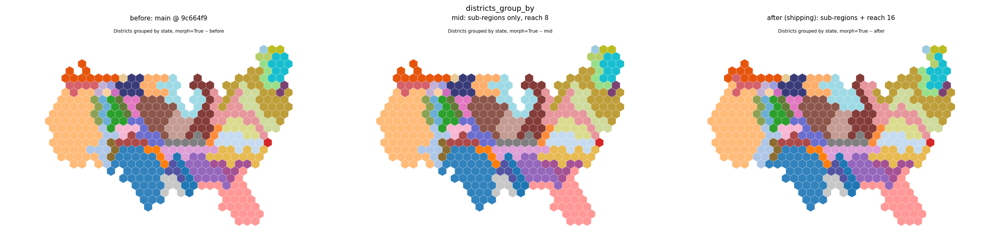
Districts grouped by state, morph=True. Unchanged by sub-regions; ring tiles 8 to 3 and empty core 12 to 7 from the reach change.
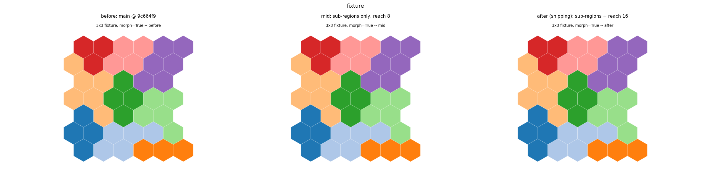
3x3 fixture. Bit-identical in all three variants.
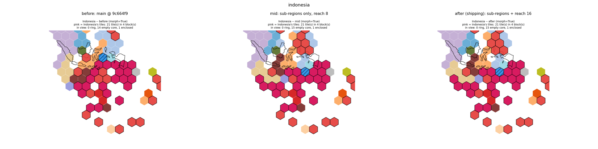
**Indonesia, morph=True.** 5 qualifying parts. Note the before panel already shows Indonesia in **4 blocks**: the old repair had already given up on the impossible constraint rather than satisfying it destructively, which is why the world numbers below do not improve.
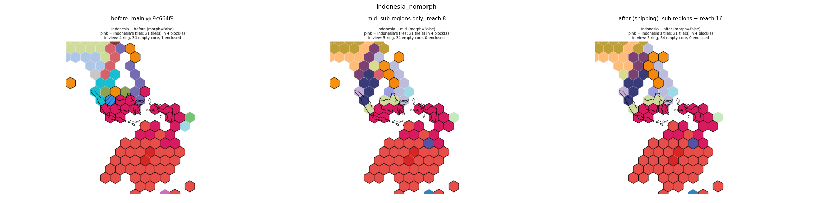
indonesia_nomorph_3way.png
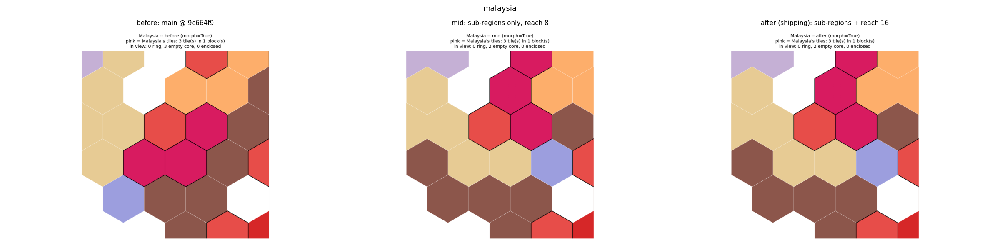
malaysia_3way.png
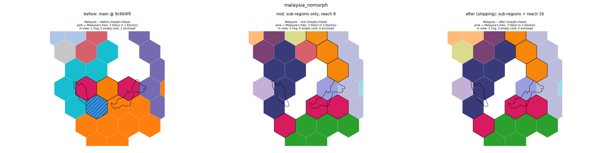
**Malaysia, morph=False.** Two parts ~600 km apart. Before: one forced block with an enclosed hole inside it. After: two blocks matching the real geography, no enclosed cell in view. Sibling sub-regions sitting near each other is correct — they are still one region.
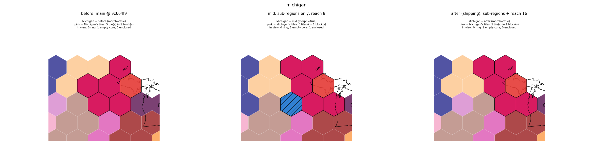
**Michigan, morph=True.** The census case. Its two peninsulas nearly touch at the Straits, so the constraint it violated was mild; the two sub-region blocks end up adjacent, which is the correct outcome, not a partial one.
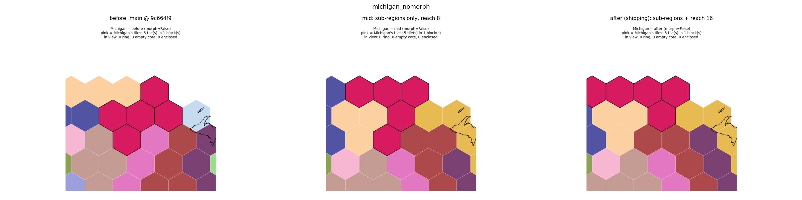
Michigan, morph=False, and the reason the threshold is 0.5 rather than 1.0 tile areas: unmorphed, the Upper Peninsula is only 0.72 tile areas.
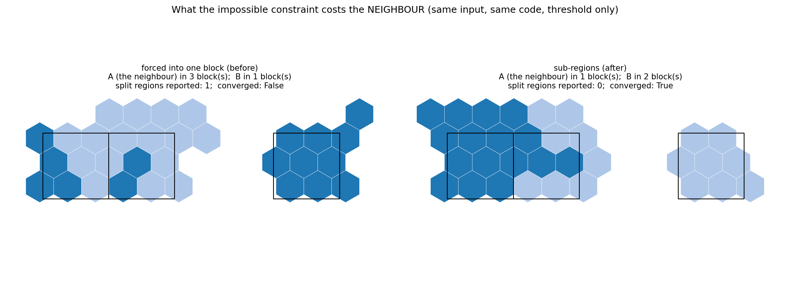
**The headline result, and the clearest evidence in this PR.** Same input, same code, only multipart_min_tiles differs. Forced to make its two parts one block, region B reaches across the gap and breaks its single-part neighbour A into 3 blocks; the layout cannot converge. With sub-regions, A is left intact, B occupies two blocks matching its geography, and the layout converges. This is what the feature is for: removing an impossible constraint so the solver stops damaging whatever is in the way.
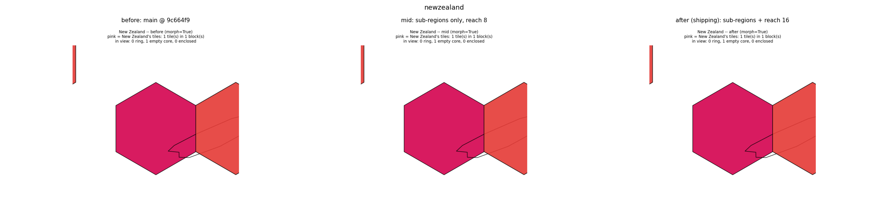
newzealand_3way.png
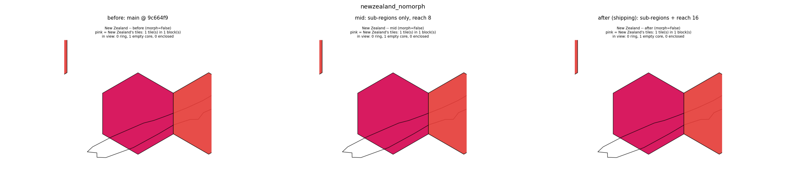
newzealand_nomorph_3way.png
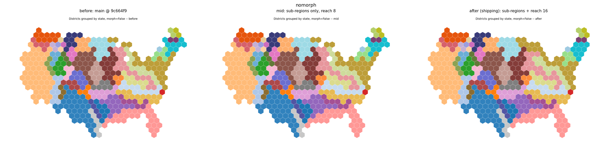
Districts grouped by state, morph=False. The one configuration that was never converged: split groups 1 to 0 and **converged False to True**, entirely from the reach change.
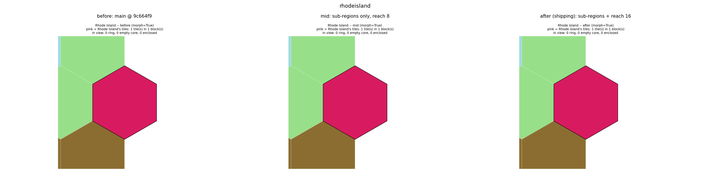
Rhode Island. It receives **one tile in total** at this budget, so it can never be two sub-regions whatever the threshold. Identical in all three variants.
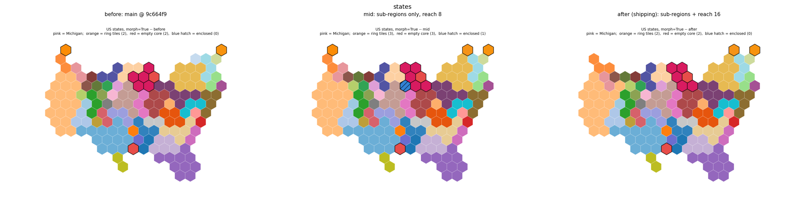
US states, morph=True. The middle panel shows the cost of sub-regions alone (one extra ring tile, one extra empty core tile, one enclosed cell); the right panel shows the reach change returning every defect counter to exactly its before value.
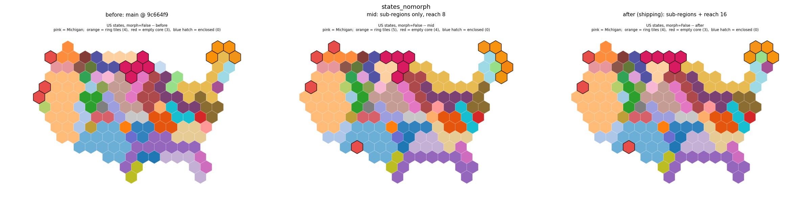
US states, morph=False. Same story: defect counters return exactly to before.
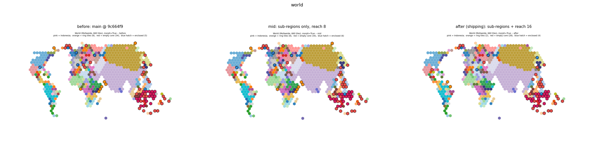
Whole world, morph=True. Ring tiles 8 to 2 and empty core 34 to 28 across the three variants, almost all of it from the relocation reach (middle panel is unchanged from before).
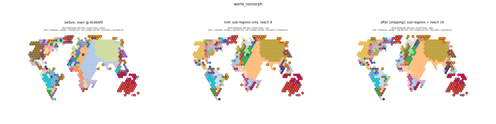
Whole world, morph=False — the harder case. Split counts rise; see the world section below.